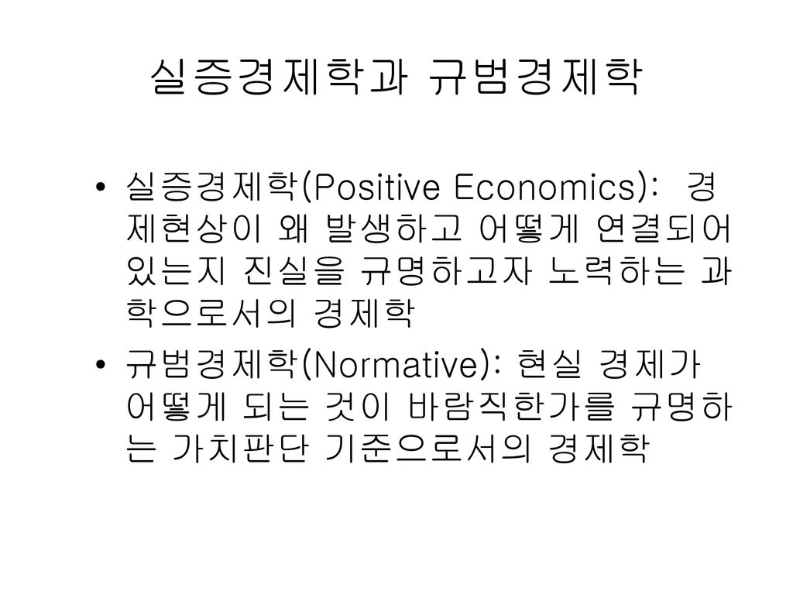
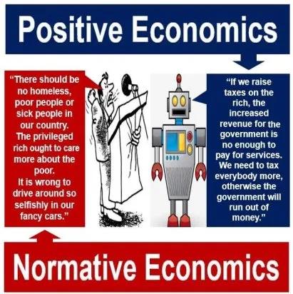

의식주 中에서도 중요한 <집>
집은 옷, 음식과 함께 우리 생활의 세가지 기본 요소로 항상 언급된다. 특히, 집은 개인들이 지출하는 단일 항목 중에는 자동차 이상으로 큰 비중을 차지하는 대상이다. 집은 사람이 살기 위한 보금자리이지만, 동시에 소위 ‘재테크'를 위해서 사는 투자 대상이 되기도 한다.
이제 집은 “사는 것"이 아니라 “사는 곳"입니다.
-서울시 Shift 홍보물 문구 중-
집은 사는 것인가? 사는 곳인가? 사실 이 질문은 매우 간단하지만, 어떻게 답하느냐에 따라서 정부 정책 기조도 바꿀 수 있는 중요한 질문이다. 예를 들어, 위의 서울시 장기전세 Shift에 대한 홍보 문구는 정책 입안자들이 위 정책을 낼 때 집을 어떤 대상으로 보고 있는지를 명확하게 보여준다. 여태까지 집은 “사는 것"이었지만(그것은 잘못된 것이고), 이제부터는 “사는 곳"이어야 한다는 메시지를 함축하고 있다. “투기와의 전쟁"을 선포하며 각종 부동산 규제로 대응하고 있는 정부의 시각도 집은 “사는 곳"이어야 한다는 인식이 밑바탕에 깔려 있다고 볼 수 있다.
집에 대한 관점은 비단 정부의 정책뿐만 아니라 개인의 판단에도 큰 영향을 미친다. 집은 “사는 곳"이라는 관점을 가진 사람은 실수요 관점에서 전세를 선호할 가능성이 높다면, “사는 것"이라는 관점을 가진 사람은 주택 가격 상승을 기대하며 대출을 받아서 주택을 사기도 한다. 극단적인 경우에는 다른 사람의 전세 보증금을 레버리지 삼아서 자신이 거주하지 않는 주택을 순전히 투자를 위해서 최소한의 자본금만으로 주택을 소유하는 사례도 있다. 정부의 주택 정책이 집은 “사는 곳"~"사는 곳” 이라는 양 스펙트럼에 걸친 관점에 따라서 나오는 것처럼, 개인들도 집에 대한 관점에 따라 자신의 주거 형태를 결정한다.
그렇다면 집은 정말 사는 곳인가? 사는 곳인가? 즉, 주거용인가 아니면 투자용인가?
실증 경제학과 규범 경제학
집이 주거용인지 투자용인지 따지기 이전에 두 가지 종류의 경제학이 있다는 것을 이해하면 도움이 된다. 실증 경제학(positive economics)과 규범 경제학(normative economics)이다. 이 두 가지 개념은 경제학 원론 수업 초반에 주로 배우는 개념이기도 한데, 대개의 경우에는 별로 중요하게 생각하지 않고 대충 넘어가는 경우가 많다. 그렇지만 실증 경제학과 규범 경제학이라는 둘은 세상을 어떻게 이해할 것인가를 결정하는 매우 중요한 틀이다.

일반적으로 실증 경제학과 규범 경제학은 위와 같이 정의한다. 전자는 사실판단과 관련이 깊고, 후자는 가치판단과 관련이 깊다. 전자는 어느 정도 객관적인 답을 내기가 용이하지만, 후자는 개인의 가치관이 반영될 수 있기에 답을 내는 것이 쉽지는 않다는 특징이 있다. 전자와 후자 중 어떤 것이 우월하다고 할 수 있는 것은 아니다. 각자 나름대로의 의미가 있고, 사실과 가치에 대한 판단이 서로를 보완해 줄 수 있다.

규범 경제학과 실증 경제학의 개념은 집이 주거용인지 아니면 투자용 인지를 살펴보는 중요한 틀이 될 수 있다.
집은 사는 것인가 사는 곳인가?
규범 경제학 측면에서 집은 사는 곳'이어야’ 한다. 즉, 의식주의 한 축인 집은 누구나 누릴 수 있어야 한다. 그러기 위해서는 가격이 지나치게 높으면 안 된다. 가격이 높아지는 것은 집을 사는 것으로만 보는 투기 세력의 역할이 크다고 볼 수 있다. 결과적으로 부동산 투기 규제를 위한 정책이 나올 가능성이 높다.
반면에, 실증 경제학으로 집을 보면, 집은 사는 곳이자 동시에 사는 것이기도 하다. 다만, 누군가는 사지 않고 살기도 하며(월세, 전세), 누군가는 살지 않고도 사기도 하며(1가구 2주택자 등이 보유한 거주 이외 주택), 자가 거주자처럼 산 것에 살기도 한다. 소유자와 거주자가 같을 수도 다를 수도 있는 것이다.
집은 소비자 입장에서는 주거 서비스를 제공하는 내구성 있는 소비재이자, 공급자 입장에서는 동시에 주거 서비스를 생산하는 자본재의 성격을 가지고 있다. 특히, 주택에 포함되어 있는 토지는 소멸되지 않는 성격을 가지고 있고, 경우에 따라 희소성이 커질 수 있는 자본의 성격을 가진다. 경험적으로 우리가 인식할 수 있는 명백한 사실이다.
문제는 우리가 디딜 수 있는 땅이라는 것의 공급은 고정되어 있다. 사람들이 선호하는 위치의 땅을 활용하기 위해서 수직으로 공간을 확대하기도 하지만, 물리적으로 무한정 확대할 수도 없고, 교통, 에너지 등의 인프라가 특정 위치에 공급될 수 있는 양도 물리적으로 한계가 있을 수밖에 없다. 즉, 거주와 이동의 자유가 높은 사람과 그런 사람들의 욕망에 비해서 땅이라는 것은 비탄력적으로 공급될 수밖에 없는 것이 현실이다.
이러한 현실이 집은 ‘사는 곳'이어야 한다는 당위에도 불구하고 현실에서 집은 ‘사는 곳'임과 동시에 ‘사는 것'이 될 수밖에 없게 만든다. 땅이라는 희소한 자원을 배분하는 메커니즘이 작동할 수밖에 없는데, 현재까지 우리 인류가 활용하는 가장 일반적인 메커니즘은 ‘가격'이기 때문이다. 주택 청약 제도처럼 희소한 자원을 추첨의 형태로 배분하기도 한다. 그러나 ‘로또 청약'라는 말이 나오는 것처럼 궁극적으로 한번 시중에 ‘발행'된 신규 주택은 유통 시장을 거치면서 가격 기제에 의해서 다시 배분될 수밖에 없다.
왜 중요한가?
집은 당위 여부와 관계없이 누구나 한 번쯤은 구하기 위해서 고민해야 하는 것이다. 어떤 관점으로 주택을 보느냐에 따라서 정부의 주택 정책 기조도 크게 바뀔 수 있지만, 개인의 인생도 바꿀 수 있다. 정부 정책 차원에서 집을 규범적으로 판단하는 것과는 별개로 현실적으로 집이 사는 것이라는 것을 현실을 개인들은 외면하기 힘든 사실로 받아 들일 수 밖에 없다.
개인 누구나 집에 대한 의사결정의 순간에 대면하게 된다. 부모님 집에 함께 거주할지, 독립할지, 혹은 기숙사에 있을지 등의 의사결정은 생애 주기 어느 순간에 한 번쯤은 겪게 된다. 무엇이 되었든 소유와 거주의 형태를 어떻게 할 것이냐를 결정해야 하는 것이다. ‘자동차’ 이상으로 장기적으로 큰 목돈이 지출될 수 있는 집은 신중한 의사결정이 필요하다.
집은 사는 곳이자 사는 것이자 언젠가는 파는 것이기도 하다

월세나 전세를 살거나, 실거주할 집을 매매하거나 그 어떤 선택에 있어서도 집은 ‘사는 곳'이자 동시에 ‘사는 것'이다. 다른 사람이 보유한 주택을 임차해서 평생 산다고 하더라도, 월세나 전세 가격은 해당 주택의 가치에 연동되어 결국은 오르낙내리락 한다. 실거주할 집을 샀다고 하더라도, 생애주기 상의 다양한 이벤트로 인해서 대출을 받아야 하거나, 연금을 받아야 하거나, 급하게 이사를 가야하거나, 주택을 처분해야 하는 것도 고려해야 한다. 이 경우 소유한 집이 살때보다 팔때 더 떨어지는 경우, 물가상승률 대비해서 실질가치가 하락하는 경우 등이 발생하게 된다면, 이사가는 집은 현재보다 낮은 수준의 주택을 구매해야 하거나 심할 경우에는 매각 자체를 못하고 울며겨자먹기로 거주 이전의 자유를 잃어버릴 수도 있다.
집은 사는 것인가 사는 곳인가?
— Kunwoo Kim(김건우) (@adalgu) October 13, 2020
답은? 둘다다. pic.twitter.com/5kEgyE7zUo
그렇기 때문에 집에 대한 도덕적 판단은 판단대로 하되, 집에 대해서 실증적으로 바라보고 공부가 필요하다. 집은 사는 곳이라고만 관념적으로 인식하고 주택 대출이나 투자를 금기시하고 담을 쌓고 사는 것은 어떻게 보면 땅속에 머리를 박는 타조와 같이 현실을 도피하는 행동일 수 있다. 자동차는 교통사고를 유발하는 나쁜 것이니 기피하고 모두가 걸어 다녀야 한다고 생각할 수는 없다. 교통사고를 줄이면서도 자동차가 주는 이동의 효용은 극대화하는 것이 자동차를 완전히 없애는 것보다 낫다.

집은 사는 곳이기도 하고, 사는 것이기도 하다는 현실을 직시해야 한다. 둘 중 마음에 드는 한 측면 보고 의사결정을 내리는 것은 개인에게도 국가에도 결코 득이 될 수 없을 것이다.
)